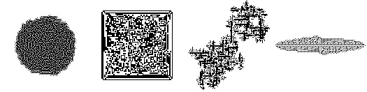
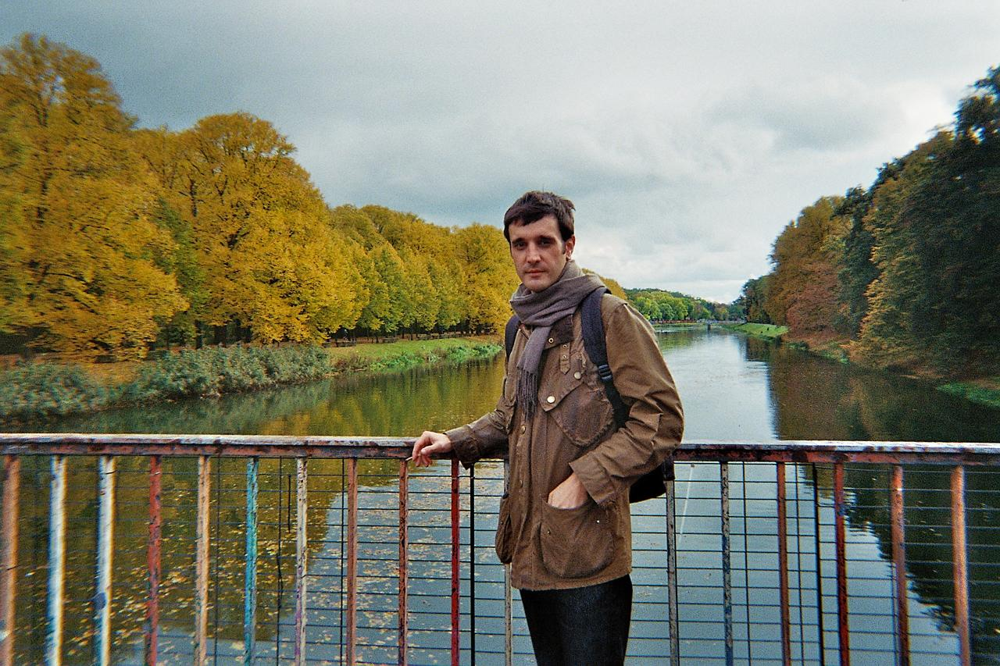

contact: alexanderporto@posteo.net | cv
interests: philosophy of mind, social cognition, cognitive linguistics, spontaneous semanticity, iterated learning, pragmatics
publications:
Porto, A., Huckle, N., Basalyga, A., Santiago, J., Kranjec, A. (2025). Glyph norming: Human and Computational Measurements of Shape Angularity in Writing Systems. Behavior Research Methods. https://doi.org/10.3758/s13428-025-02682-7.
Porto, A., Basalyga, A., Huckle, N., Santiago, J., Fein, E., Kranjec, A. (2024). Sound symbolism across diverse writing systems. Proceedings of the Annual Meeting of the Cognitive Science Society.
Brar, P. Pienkos, L., Porto, A., Sarpal, D., Schreiber, J., Kalarchian, M., Kranjec, A. (2024). Methods and models for investigating anomalous experiences in schizophrenia. Philosophical Psychology.
Porto, A. (2023). The picture theory of symbolic development in early childhood. Theory & Psychology.
works in progress/papers in review:
Porto, A. Inference, Language, and Situated Conceptualization. (under review)
The purpose of this writing is to exercise a philosophical lesson about the role of linguistic inference in cognitive science accounts of conceptualization. I argue that while it makes good sense to endorse the idea that our conceptual scheme comes about through a complex, multimodal, contextual, and simulative process of what Barsalou calls entrenched situated conceptualization, it nonetheless requires a linguistically articulated inferential framework to get off the ground. I defend the thesis that the cognitive process of entrenched situated conceptualization requires a transposition into inference-first terms. I do this by showing that we can engage in contextual simulated cognition if and only if we have a normative conceptual repertoire, a common ground; and that we can establish common ground if and only if our cognitive processes that afford representational capacities are seen as a way of making second-order maps of an environment.
Abstract
Porto, A. Inferential Mentalization. (under review)
Mentalization, the capacity to ascribe epistemic states like knowledge and ignorance to others, is widely treated in cognitive science as a perceptual or quasi-perceptual achievement, one that develops early and can be detected in prelinguistic infants via anticipatory looking research designs. This paper argues that view is mistaken at the level of kind, not just degree. Mentalization is not a perceptual accomplishment but an inferential one: to ascribe an epistemic state is to grasp the normative, functional role that mental-state concepts play within a linguistically structured practice. On this account, no prelinguistic infant can mentalize, however behaviorally sophisticated—and what anticipatory-looking paradigms actually track is something real but categorically distinct, viz. subpersonal domain-general cognitive processes. Building on Cecilia Heyes’ language-first account while supplying the normative pragmatic foundation it lacks, I develop an inferentialist model of mentalization grounded in Wilfrid Sellars’ distinction of Rules of Action and Rules of Criticism and show how this reframes empirical questions about the transition from stimulus-response tracking to genuine epistemic state ascription in cognitive development.
Abstract
Porto, A., Pietschmann, J., Seiberth, L., & Kranjec, A. Experimental Reanimation: The Case of Jumblese. (under review)
Experimental philosophy (x-phi) has become a rapidly expanding area of philosophy. Despite its proliferation, it remains contested what x-phi does and how it ought to be practiced. We propose a methodological intervention to respond to this gap: experimental reanimation. Rather than employing empirical methods to test intuitions, we show one way that x-phi can approach experimentation as a means for studying material constellations of words that enable movement in conceptual space. We illustrate this by reanimating Wilfrid Sellars’ Jumblese, a predicate-free pictorial notation. In our experiment, participants translated Jumblese-style sentences into English. Using Semantic Textual Similarity analysis and sentence embeddings, we found that spatial features (position and size) most reliably predicted semantic cohesion across responses, even in the complete absence of predicate terms. Our findings support Sellars’ nominalist program; persons systematically transform illustrative sign designs in pattern-governed ways by relying on spatial arrangement. Thus, we introduce the Coordination Thesis, which argues that people learn to navigate the world through the intersubjective use of linguistic artifacts, rather than learn to think in terms of the categorical status of items in the external world. Experimental reanimation therefore paves a via media between conceptual and empirical analysis.
Abstract
Porto, A. Process Nominalism and Cognitive Neuroscience. (under review)
The current mission of cognitive neuroscience is to link together cognitive processes with neural states. But this mission famously runs into trouble when faced with mental causation. Attempts have been made to circumvent this problem, so that we can have a non-reductive physicalism. But what is common to those attempts is an acceptance that mental and physical properties are metaphysically loaded abstract entities. I argue that cognitive neuroscience can bypass puzzles brought about by mental causation by adopting a process-nominalist ontology. If this is right, then the exclusion argument has no grip on this picture. If our scientific conceptual scheme contains nothing more than sets of dynamically evolving, subjectless, and objectless processes, and if we know that when we refer to those processes as CNS states or mental events that we are doing nothing more than nominalizing, then all we require is a metavocabulary that specifies inference rules of transposition between talk of the physical and of the mental. I conclude by offering suggestions for how to realise such a task.
Abstract
Porto, A. & Kranjec, A. Folk theories of perception structure language comprehension. (under review)
Seeing is frequently imagined as an active process moving outward; from the eye toward the perceived object. Although extramission was rejected with advances in seventeenth-century optics, evidence suggests that this belief persists as a folk theory of perception alongside modern scientific theories today. The present study shows that implicit, persistent, and experientially grounded models of vision and audition do not merely inform explicit reasoning about perception, but actively shape general cognition as evidenced in real-time language processing. Participants (n = 60 per experiment) compared sentences describing either a seeing or hearing event with diagrams depicting a subject and object label connected by an arrow that could emanate from either word. Significant interactions indicate that native English-speaking participants were biased to conceptualize vision as emanating from subject-to-object, and hearing as emanating from object-to-subject, suggesting a form of sensory embodiment in which modality-specific patterns of perceptual experience constrain how people understand event structure.
Abstract
Porto, A. & Kranjec, A. Novel Verbs Outperform Nouns in Artificial Language Learning. (in progress; manuscript written and data analyzed)
Developmental research consistently shows that children learn nouns before verbs, attributed to Gentner’s Natural Partitions Hypothesis. Nouns reference stable, perceptually cohesive objects while verbs reference dynamic, abstract events. However, this noun-bias may reflect methodological confounds rather than cognitive universals. We tested whether grammatical framing alone influences concept formation in artificial language learning in adults. Participants (n = 156) learned categories of abstract geometric images paired with either noun, verb, or nonword labels. Identical stimuli across conditions controlled perceptual stability and isolated grammatical framing from referential content. Results showed that noun and verb labels significantly outperformed nonwords in accuracy. In an artificial language learning task, participants were faster to correctly respond to verb-labeled categories as compared to noun- and nonword-labeled categories. Our findings raise questions about universal noun-biases and suggest that when perceptual factors are constant, verb semantics may provide effective cognitive scaffolding for concept formation through event-based inferential processes.
Abstract
Porto, A. Probabilistic Claiming as Meta-Comparative Practice. (in progress)
This essay recasts Sellars’ account of probability in terms of Bayesian inference to exercise a method for comparing theories that constitute our conceptual scheme. I argue against the view that we possess multiple conceptual schemes in competition. Instead, I propose that we are in possession of a single conceptual scheme with a two-sided structure. On one side are our prior beliefs, authorized through scientific practice. On the other side lies the possibility that our framework might be challenged by posteriorly available evidence. This generates a danger of scepticism between these sides: if we have good reasons for our current doxastic commitments, then we ought to endorse them; but if we recognize that our conceptual scheme may require revision, then why should we commit to it now? I argue that our conceptual scheme is historically developing and holistically singular, and that the theories that compose it ought to be robustly compared through a framework of conceptual change grounded in a Sellarsian version of Bayesian inductive inference. I aim to leverage Sellarsian probability, reframed in Bayesian terms, to show that epistemic modesty toward probability arguments helps us avoid this danger.
Abstract
Porto, A. Naturalizing Negation. (in progress; presented at Wittgenstein & the Formal Sciences IV, UNESCO World Logic Day)
In The Threefold Puzzle of Negation and the Limits of Sense, Jean-Phillipe Narboux offers a picture of negation that is conceptually bound up with the limits of sense and intentionality. Narboux argues that in order to begin thinking about limit and thought’s answerability to reality, one must attend to a threefold structure of negation: a fold about intentionality; a fold about intelligibility; and a third fold about the apparent uni- and equivocality of negation. Throughout the essay, Narboux provides blueprints for addressing each aspect of the trilemma by emphasizing the two-way unity and distinction, borrowed from Wittgenstein, between the determination and employment of sense. Narboux argues that one can begin to unfold the puzzle by transposing it into a sceptical tone. I suggest that this is mistaken. I argue that Narboux’s sceptical treatment of the puzzle of negation stands in the way from a thoroughly ameliorative account of the trilemma. I will show that in order to work toward putting the puzzle to rest, we must put it into a naturalized register. The idea is that we ought to see negation as natural to and necessary for thought. It is at this point that we can begin to see how negation is bound up with limits of intelligibility and intentionality.
Abstract
